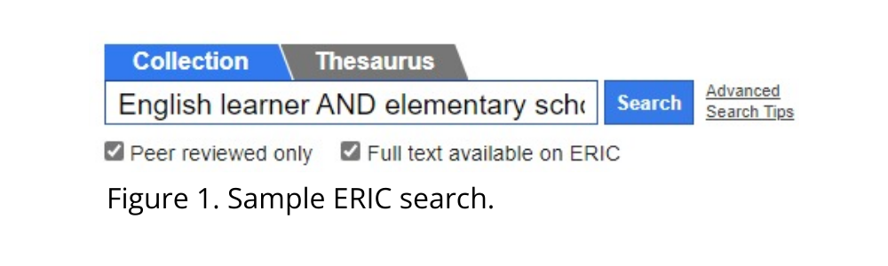
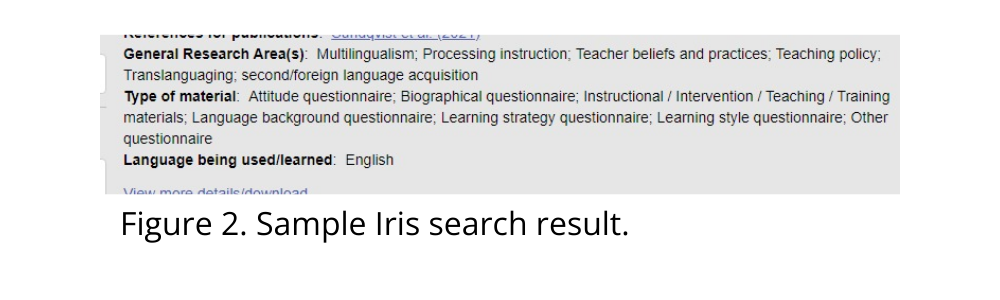

Open access databases link to published research, research
tools, and plain language research summaries that are publicly available. What
are plain language summaries? These are abstracts of academic
articles written in non-technical language. The growing number of journals that
publish plain language summaries include Community
College Journal of Research and Practice and Language
Awareness.
Here are four examples of open access databases:
Education Resources Information Center
(ERIC) is a database of published research in
education. Search by entering any text you wish or use filters to
narrow your search. Filters include topics, age groups of learners, language of
publication, country, and many others. We suggest first selecting “peer
reviewed only” and “full text available on ERIC” (if you are not affiliated with
a university library). Such a search on November 7 with keywords English
learner AND elementary school, as shown in Figure 1, yielded
365 articles published since 2022 that are both peer-reviewed and
publicly available on ERIC.
ERIC indexes education research in journal articles, books, reports, working
papers, conference proceedings, and dissertations. The site is sponsored by the
U.S. Department of Education.
Iris: A Free Public Research Resource is a
database of research tools for languages and language learning.
Search by entering any text you wish or use filters to narrow your search.
Filters include the type of material (such as assessment, coding, example
interview guide, interactive task, role play), the language being used or
learned, and participant type, among others. These research tools are used in
studies of language development, of how languages are used and learned, and of
the effectiveness of teaching interventions and strategies. For instance,
entering the search term translanguaging produced five articles. Figure
2 provides an example of the types of materials (i.e., the research tools)
available through one research article.
Selecting your article produces a list of the research
tools that were used, which you can then download. Usually, a published article
will describe the research tools or provide examples in an appendix, without
making them available in full. Iris is funded by the British Academy,
U.K.
Oasis: Open Access Research Summaries in Language
Studies. Oasis is a database of plain language
summaries of language research, provided in English. Search by
entering any text you wish or by area of research and other options. Although
the database is free, Oasis will ask you for a bit of demographic information
when you begin. Your downloaded summary will include a four-part breakdown of
what the research is about, what the researchers did, what
they found, and things to consider. Here is an example. This
example includes the DOI location of the article, which will not necessarily be
free. Plain language summaries of 240 TESOL Quarterly articles published since 2019
are included in this database. Here is an example. The site
is funded by the University of York, U.K.
OpenAIRE Explore. OpenAIRE is a database of
open access, published research that also includes options for
accessing research data and research software.
Because it does not focus on language studies alone, as do Iris and Oasis, using
this database takes a bit more work. Selecting filters for publications,
articles, within the past five years, and education yielded
more than 2,000 open access articles. Other filter options include
country and language. This article about remote learning
published in English and Portuguese is an example. The site is funded in
part by the European Union.
TESOLgraphics is
a database of one-page infographic summaries of research syntheses and reviews
in TESOL. Each infographic helps teachers understand key terms, the
evidence base, the focus of the research synthesis, major
findings, and how teachers can apply the findings to their
teaching. The infographics are created by teachers
and for teachers; practitioners read a research
synthesis, tease out findings that are most relevant to practice and reflect on
how findings can be used by teachers. Here is an example.
Currently, TESOLgraphics has over 100 infographics and publishes new
infographics regularly. Additionally, TESOLgraphics is on X (formerly Twitter), hosts
periodic talk shows and online reading groups, fostering a community where
teachers and researchers in TESOL come together. TESOLgraphics is funded by the
University of St Andrews in the UK and Universidad Andrés Bello in Chile.